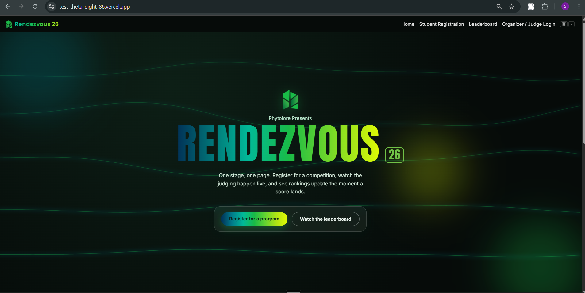

01 / WEB PROJECTRendezvous 26

Rendezvous 26
A competition-management web experience featuring student registration, a live leaderboard, and organizer / judge access.
AI EDUCATION · PROMPT ENGINEERING · PRODUCT BUILDING
I explore and teach practical applications of Artificial Intelligence — from helping students learn more effectively to training professionals and building AI-powered products.
PROFILE
My work sits at the intersection of learning, technology and communication.
I design beginner-friendly AI learning experiences, turn complex ideas into practical workflows, and experiment with AI-powered products that solve specific problems.
Make AI understandable and useful for learners.
Prototype practical AI and web product ideas.
Test new models, prompting methods and workflows.
SELECTED WORK

A competition-management web experience featuring student registration, a live leaderboard, and organizer / judge access.
An MVP concept that analyzes branch-level product performance and automatically identifies products showing the strongest performance within each branch.
Exploring how different AI systems can be matched to different tasks instead of treating every model as interchangeable.
Designing subject-specific study agents that can work with notes, summaries, practice questions and revision workflows.
Turning one-off prompts into repeatable frameworks with context, constraints, output formats, examples and reliability checks.
Moving from an idea to a structured MVP: user problem, data flow, model role, interface and practical handoff.
AI EDUCATION
A structured high-school AI curriculum designed to move learners from AI literacy to building their own study agents.
The program covers AI fundamentals, everyday study use, prompt engineering, AI agents, subject-specific study agents, AI-assisted coding and responsible AI use.
Open curriculum PDF ↗TEACHING APPROACH
Start with simple mental models and everyday examples before introducing technical language.
Turn concepts into prompts, experiments and small workflows learners can test immediately.
Teach learners to question outputs, check sources, spot hallucinations and improve prompts.
Finish with something tangible — an agent, workflow, interface or prototype that demonstrates understanding.
06 / CONTACT
Available for AI education, tutoring, workshops and practical AI project work.